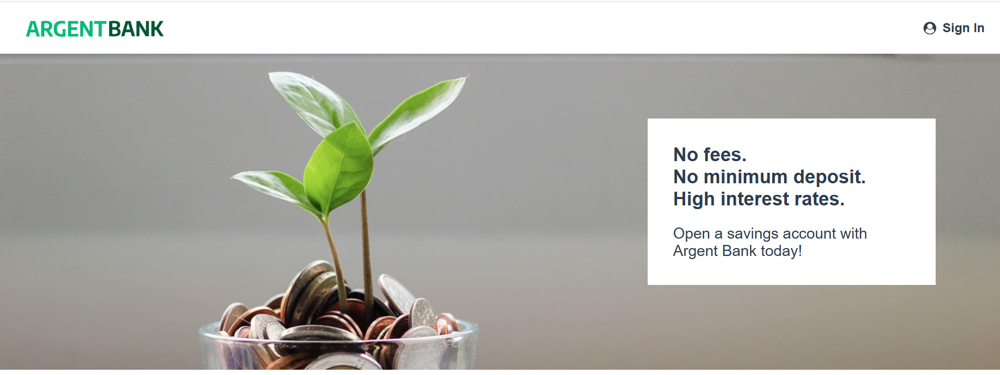
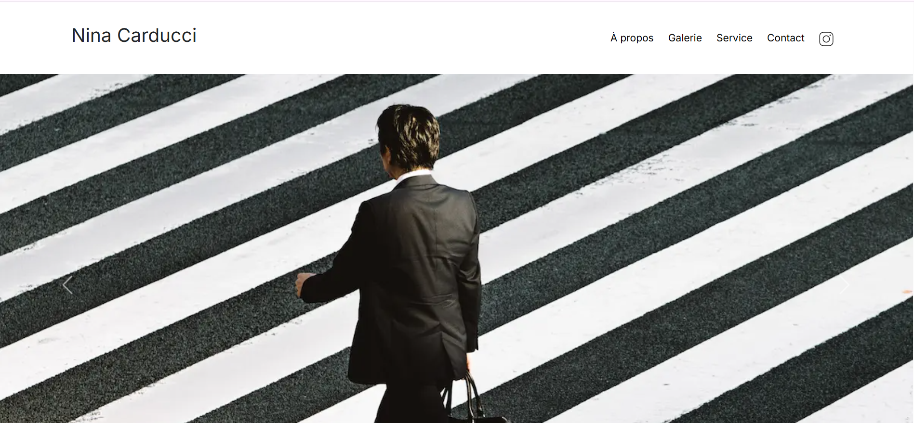
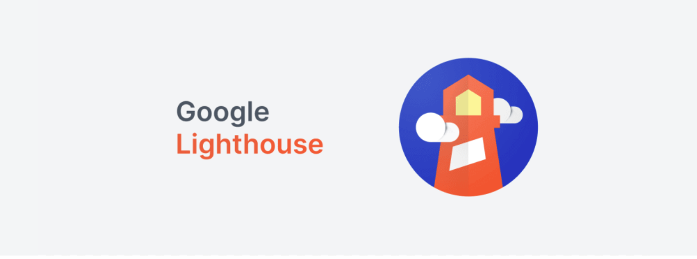
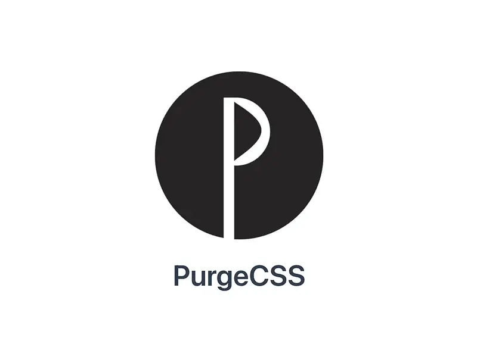
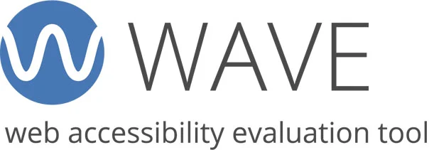

À propos
Je travaille actuellement comme assistante administrative dans une société de transport, et je me forme en même temps au développement web. Ce qui m'intéresse particulièrement, c'est l'IA et le code, et j'aimerais un jour travailler en Asie, surtout en Corée du Sud.
Je maîtrise React, Redux, HTML et CSS. Sur le projet ArgentBank, j'ai développé un système d'authentification complet avec gestion des erreurs et protection des données utilisateur.
Je suis fière de mon projet d'optimisation pour Nina Carducci, une photographe dont le site était trop lent à charger. Après un audit complet, j'ai livré un site optimisé avec un score Lighthouse nettement amélioré.
Mon approche : je ne me contente jamais d'une solution qui "marche" sans la comprendre entièrement
je vérifie chaque choix technique, je pose des questions jusqu'à être sûre d'avoir compris.
Mon objectif est de partir en Corée du Sud pour apprendre le coréen à l'Institut Yonsei. Ensuite, j'aimerais continuer vers le design UX/UI.
Mes projets
ArgentBank

Application web React pour une banque en ligne fictive : authentification sécurisée, gestion des erreurs, protection du profil utilisateur.
Compétences développées
Compréhension approfondie du code React/Redux existant, et capacité à écrire moi-même de nouvelles fonctionnalités à partir de zéro.
Résultats
Application fonctionnelle : connexion sécurisée, gestion des erreurs, accès au profil utilisateur protégé.
Perspectives d'amélioration
Ajouter la gestion des transactions bancaires, comme prévu dans la suite du projet initial.
Nina Carducci - Optimisation SEO




Audit et optimisation complète d'un site de photographe : performance, accessibilité, référencement local.
Compétences développées
Réalisation d'un audit technique complet (performance et accessibilité), et mise en pratique de bonnes pratiques de prospection freelance.
Résultats
Score de performance Lighthouse nettement amélioré, accessibilité validée via Wave.
Perspectives d'amélioration
Poursuivre l'optimisation du référencement du site dans le temps.